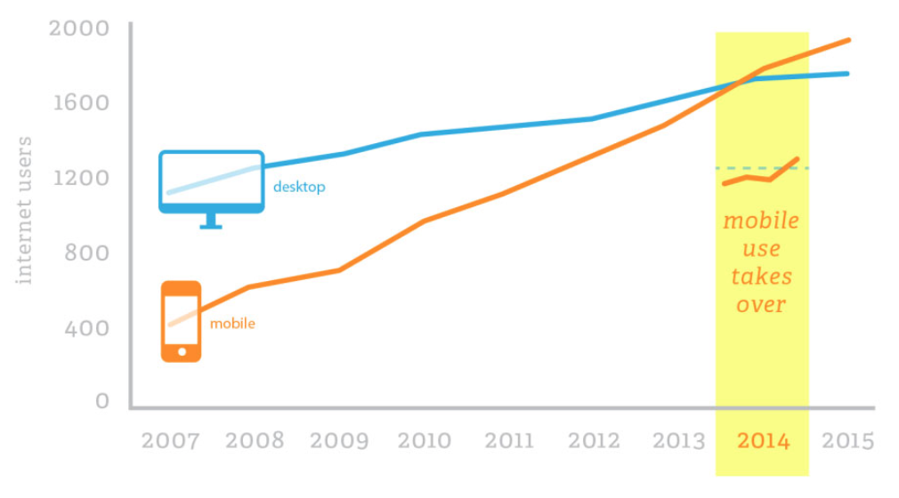

1996 - Cascading Style Sheets
In 1996 werd CSS gecreëerd. CSS was belangrijk voor het beter structureren van een ontwerp vanuit een technisch perspectief. Het doel van CSS was om de inhoud te onderscheiden van de opmaak. In deze tijd waren er nog maar een paar websites die CSS konden ondersteunen.

1999 - HTML4.01 wordt standaard
Nadat de HTML-versie 4.01 in 1999 standaard werd, publiceerde het World Wide Web Consortium XHTML 1.0. Deze opnieuw geformuleerde HTML volgens de regels van het XML-gegevensformaat. Hoewel HTML hoofdletters of kleine tagnamen en -attributen kan bevatten, vereist XML dat deze allemaal kleine letters zijn. Er waren enkele andere verschillen: alle attributen moesten worden geciteerd, en afzonderlijke elementen zoals IMG of BR vereisten een sluitende schuine streep.

2000 - A Dao of Web Design
In het jaar 2000 publiceerde het online magazine 'A List Apart' een artikel genaamd 'A Dao of Web Design'. In het artikel wijst John Allsopp erop dat nieuwe media vaak beginnen door de bril van een vorig medium aan te nemen. Elk nieuw medium begint zijn leven door zijn voorgangers na te doen. Met dat in gedachten is het niet verbazingwekkend dat webontwerp begon met pogingen om het soort lay-outs na te doen waarmee ontwerpers vertrouwd waren in de drukkerijwereld.
2002 - Audi: de eerste responsive website
In 2002 kwam de eerste responsive website uit, dit was de website van Audi. De Audi.de- en Audi.com-websites uit 2002 vertegenwoordigen een primitief voorbeeld van responsief ontwerp. Maar de motivatie achter de lay-outs en de implementatie weerspiegelt moderne, responsieve technieken.
2005 - De opkomst van JavaScript
In 2005 kreeg JavaScript een boost door de publicatie van een artikel genaamd: Ajax: A New Approach to Web Applications by Jesse James Garrett. In dit artikel werd een naam gegeven aan een populaire techniek. Met JavaScript was het mogelijk voor een website om gegevens te ontvangen en verzenden. Het resultaat hiervan was een soepelere gebruikerservaring.
2007 - Steve Jobs onthulde de iPhone
Drie apparaten in één. Namelijk een iPod, een telefoon en een internetcommunicator. Deze 3 afzonderlijke apparaten in één noemen we de iPhone. In 2007 onthulde Steve Jobs de eerste iPhone, een mobiel apparaat dat gebruikt zou kunnen worden om op het World Wide Web te browsen.

2010 - De term responsive webdesign
In 2010 heeft Ethan Marcotte de term responsive webdesign bedacht, het idee dat een website zich aanpast aan de gebruiker en met percentages en andere relatieve eenheden te werken om dit waar te maken. Zijn idee had hij uitgewerkt in een artikel genaamd 'Responsive Web Design' op de website 'A List Apart'

2014 - Meer gebruik van mobiel dan desktop
Het aantal wereldwijde gebruikers van mobiele apparaten heeft het gebruik van desktopcomputers in 2014 al overschaduwd. Omdat de meerderheid van de wereldwijde gebruikers mobiele apparaten gebruikt is het van groot belang dat responsive webdesign zich blijft ontwikkelen en verbeteren.
